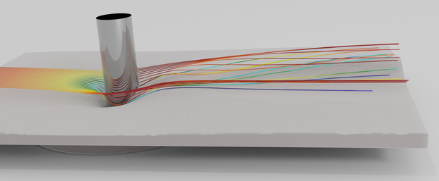

SedFOAM
Introduction
This documentation describes the three-dimensional two-phase flow solver for sediment transport applications: SedFoam. The solver is based on twoPhaseEulerFoam available in the official release of the open-source CFD software OpenFOAM (based on OF2.4). In this approach the sediment phase is modeled as a continuum, and constitutive laws have to be prescribed for the sediment stresses. In the proposed solver, two different inter-granular stress models are implemented: the kinetic theory of granular flows and the dense granular flow rheology &mu(I). For the fluid stress, laminar or turbulent flow regimes can be simulated and three different turbulence models are available for sediment transport: a simple mixing length model (one-dimensional configuration only), a &k-&epsilon and a &k-&omega model.
Different easy benchmarks/tutorials_1d are provided to illustrate the model capabilities: a sedimentation of spherical partiles at low Reynolds number, the laminar bed-load problem, the turbulent sheet-flow regime. Moreover some advanced multi-dimensional cases/tutorials_2d3d are proposed. The source code and tutorial cases are disseminated at the public website: https:/
This manual is written as the documentation of the open-source solver sedFoam, it includes the installation procedure and a description of the model input/output files. The details concerning the mathematical formulation and the numerical implementation can be found in Chauchat, Cheng, Bonamy, Nagel, Hsu (Geophysical Model Development, 2017, https:/
The documentation is divided into two parts, the first one is the user manual:
- Section Installation explains how to download, compile and install SedFoam.
- Section Getting started gives informations on how the case directory is organised.
- Section One-dimensional test cases describes the 1D tutorials provided with SedFoam sources including postprocessing using a python toolbox also provided with the source and the expected results.
- Section Multi-dimensional tutorials describes the 2D and 3D tutorials provided with SedFoam sources
- Section Input Parameters describes the input parameters for SedFoam
- Section How To work with github provides a survival guide on how to use git to use/develop sedFoam
- Section Frequently Asked Questions provides answers to typical Frequently Asked Questions about SedFoam
The second part provides informations for developers.
sedFoam license
Copyright © 2020 by Cyrille Bonamy, Julien Chauchat, Tian-Jian Hsu, and contributors.
Permission to use, copy, modify, and distribute this software and its documentation under the terms of the GNU General Public License is hereby granted. No representations are made about the suitability of this software for any purpose. It is provided "as is" without express or implied warranty. See the GNU General Public License for more details.
Acknowledgments
This project is supported by many organisations. Please find the list here.
Go to the next section.